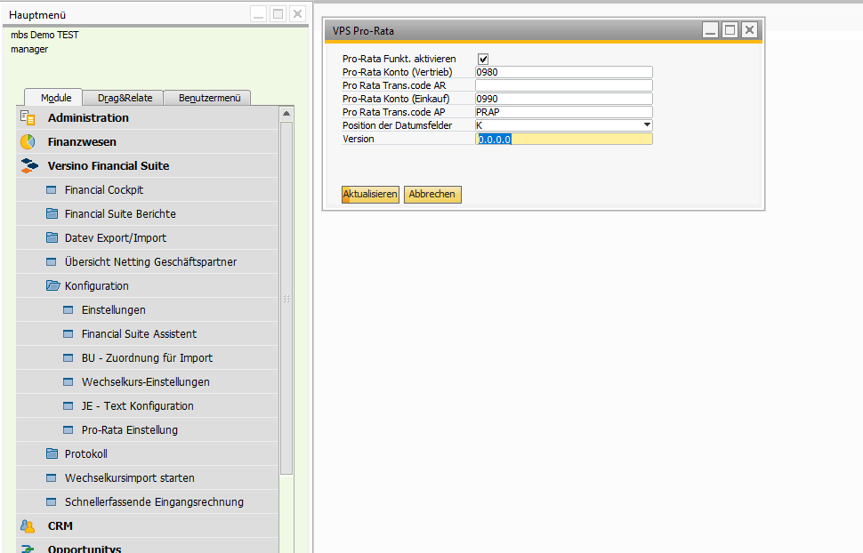
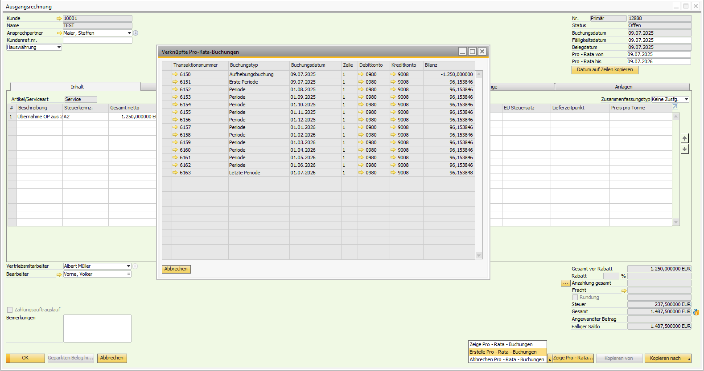

Period Accrual/Deferral (Pro-Rata)
Overview
The Versino Pro-Rata Module automates the creation of pro-rata accrual/deferral postings in SAP Business One. When you create an invoice with a service period spanning multiple months (e.g., an annual license), the module distributes the amounts on a daily basis and automatically across the corresponding periods. This ensures a correct, period-based profit and loss statement.
Access & Configuration: The settings are made under Versino Financial Suite > Configuration > Pro-Rata Settings. Here you must activate the module, define the necessary accrual/deferral accounts, and can specify the position of the date fields (in the header of the invoice or in a separate tab).
Supported Documents: A/P and A/R invoices and their corresponding credit memos.
Main Features
Automatic Accrual/Deferral Postings & Calculation
The system automatically creates journal entries to distribute invoice amounts pro-rata on a daily basis across the corresponding months. It correctly handles different month lengths and partial months. The posting logic reverses the original revenue or expense posting, books the total amount to an accrual/deferral account, and then releases it monthly on a pro-rata basis.
Flexible Accrual/Deferral (Header & Row Level)
The module adds fields for the accrual/deferral period (From/To date) to the invoice forms. You can either set the period for the entire invoice in the header area or define it individually for each invoice row. A convenient button ("Copy date to rows") allows you to quickly transfer the data from the header to all rows.
Reversal and Correction Functions
Accruals/deferrals can be easily corrected. If you create a credit memo for a deferred invoice, the associated accrual/deferral postings are automatically reversed proportionally. Alternatively, you can manually reverse all accruals/deferrals via the action menu in the document, change the data, and recreate the postings.
Integration & Support for Other Functions
The module is seamlessly integrated into SAP Business One and the Financial Suite:
- Cost Accounting: All dimensions (cost centers, projects, etc.) are carried over from the original invoice to the accrual/deferral postings.
- Foreign Currencies & Branches: The module works fully with foreign currency invoices and in multi-branch environments.
- JE Text Setter: If activated, all pro-rata postings automatically receive meaningful and traceable posting texts.
- DATEV & Reporting: All accrual/deferral postings are correctly included in the DATEV export and in reports.
Application
1. Preparation: One-time Configuration
- Navigate to Versino Financial Suite > Configuration > Pro-Rata Settings.
- Activate the module via the checkbox.
- Define a Sales Account for revenue deferrals and a Purchasing Account for expense accruals.
- Choose the desired Position for the date fields in the documents (header area or separate tab).
- Save the settings.
2. Daily Application in the Invoice
- Create and save an A/P or A/R invoice.
- Enter the From Date and To Date of the service period (in the header or in the rows).
- In the "Pro-Rata Action" dropdown field, select the option "Create Postings".
- Confirm the action. The system creates the daily pro-rata accrual/deferral postings in the background.
- With the actions "Show Postings" or "Cancel Postings", you can view or remove the created postings at any time.
Important: If you want to change an invoice with already created pro-rata postings, first cancel the accruals/deferrals, make the changes, and then recreate them.
Tips and Troubleshooting
Here you will find solutions for the most common questions and problems:
- Problem: The pro-rata fields or the function button are not displayed in the invoice.
Solution: Check if the module is activated in the Pro-Rata settings. Restart SAP Business One so that the form extensions are loaded correctly. - Problem: The creation of the postings fails.
Solution: Ensure that the accrual/deferral accounts are correctly configured in the settings and that all affected posting periods are open in SAP Business One. - Problem: The amount distribution seems incorrect.
Solution: Check the entered From and To dates for correctness. The system calculates on a daily basis.